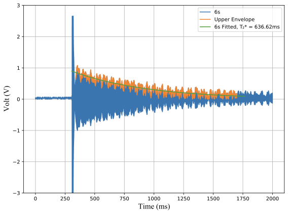

Journal Article
Learning-Guided Modeling for Ke Earthquake Systems
Introduces a computational workflow combining physically motivated models with data-guided refinement for engineering analysis. This entry is suitable for a cover figure, one concise summary paragraph, and direct access to the paper.